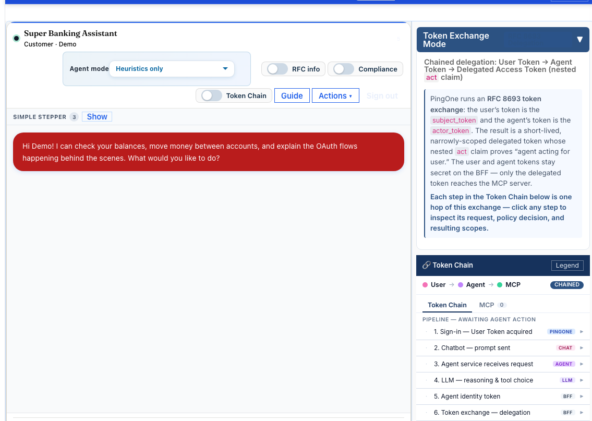
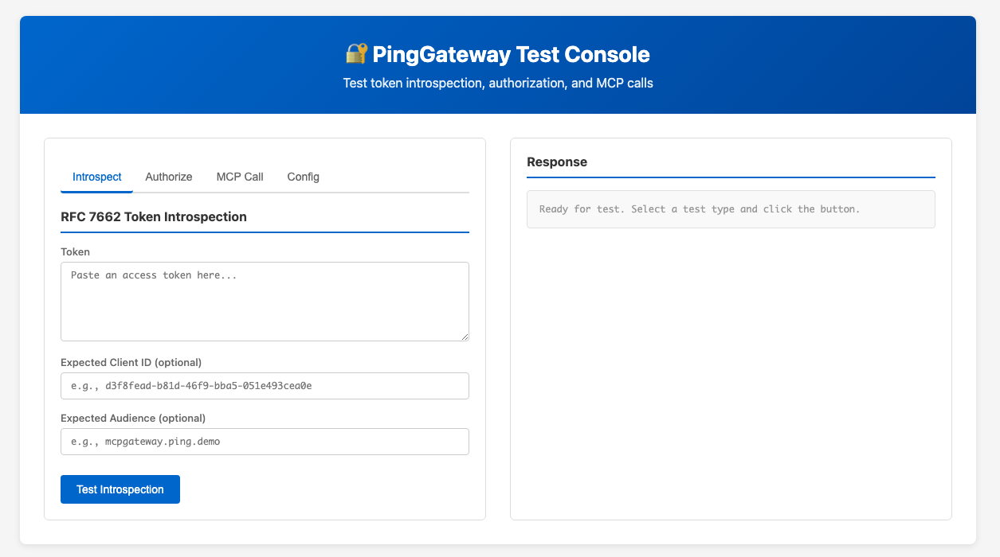
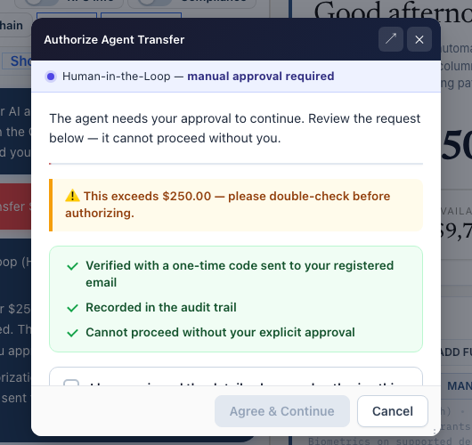

Code inventory · 25 September 2026
AI-DEMO2
what’s actually in it
Use cases · agents · servers · screens · token-chain views
Feature maturity and external setup requirements are called out.
Counts from the repository
A large demo stack with a canonical scenario catalog.
demo_api_server/config/useCases.js; foundations, controls, attacks, HITL, learning, tools, demos and non-human identity.The 68 and 11 counts are read from the current catalog source. A configured environment may expose fewer paths because some entries are feature-flagged or need external PingOne setup.
Agent inventory
Separate the agent product surfaces from the runtime frameworks.
Named agent surfaces / endpoints
- Banking demo agent:
/api/demo-agent - Admin:
/api/admin-agent· Ops:/api/ops-agent - Support:
/api/support-agent· Compliance:/api/compliance-agent - A2A:
/api/a2a· generalist/specialist hand-off · orchestrator - Autonomous agents · workload/personal agent · SaaS-embedded Website Worker
- Ungoverned agent for policy comparison
Current runtime and frameworks tested
langchain_agent: current Python LangChain runtime, port 8888demo_agent_service: AG-UI run service; streams events to the BFF- Also tested: OpenAI Agents SDK, Mastra and Pydantic AI alternate runtimes
- AG-UI is the run/event interface, not an agent framework
- Separate
agent_token_servicebrokers tokens for Microsoft Copilot Studio
Code Explorer, Protected RAG and LLM Gateway are adjacent AI/tool experiences, not agent runtimes. Optional runtimes need to be started and configured.
Catalog group 1 · 14 entries
Delegation, workload identity and domain tasks.
UC1 Delegated access (consent only)UC2 A2A delegationUC2.5 A2A Orchestrator — Interactive LearningUC2.6 A2A generalist mismatchUC3 act gateUC19 Non-human (agent) identity lifecycleUC20 Agent observability and traceabilityUC33 My mortgageUC34 Spot unusual patternsUC35 Why was that blocked?UC38 Workload Agent: MFA-gated protected actionUC43 Consumer & Partner Agent — CIMD registrationUC44 Workload Agent: OBO customer-data readUC45 SaaS-Embedded Agent — Website WorkerCatalog group 2 · 15 controls + 4 HITL
Policy gates and progressively stronger approval.
UC4 Overscoped agentUC6 Authz deniedUC9 Group / entitlement checkUC21 Entitlement-tiered capabilityUC17 JIT / ephemeral credentialsUC30 Third-party MCP, scoped at gatewayUC31 Third-party MCP, out-of-scope denialUC32 Live-reconfigure gateway scope policyUC41 Third-party search, filtered at gatewayUC42 Third-party search, blocked queryUC25 Enterprise-managed MCP accessUC39 Centralized MCP revocationUC40 Enterprise-managed MCP auth (native ID-JAG)UC28 Tool set as authorization boundaryUC37 Verified-trust signed A2A assertionUC7 MFA step-upUC8 MFA + HITL consentUC22 CIBA out-of-band approvalUC27 HITL consent bypass attemptCatalog group 3 · 11 attack / failure cases
Concrete things the system tries to stop.
UC5 Wrong / insufficient scopeUC10 Resource ownership / account takeoverUC11 Bad client → agent gatewayUC12 Token theft / replay defenseUC13 Confused-deputy actor injectionUC14 PAR + RAR intent exceededUC15 Intent-token tamperingUC16 Impersonation blocked (OBO required)UC16b Raw user-token forwarding blockedUC18 Rate-limit / overload defenseUC29 OAuth introspection outage — fail closedCatalog status tags
UC15 and UC29 are marked needs-build in the catalog.
Flag-gated examples
UC12 requires ff_dpop; UC14 requires ff_rar. A catalog entry does not mean the flag is on in every deployment.
Catalog group 4 · demo, tools and NHI · 8 entries
Use-case launcher, developer tools and agent inventory.
UC23 Progressive trust demo — presenter guideUC24 Public catalog accessUC26 Proof of enforcement — live verdictsUC-TOOL1 Protected RAGUC-TOOL2 Code ExplorerUC-TOOL3 LLM GatewayUC-NHI1 Multi-source non-human identity inventoryUC-NHI2 Agent lifecycle export (JML)The launcher’s catalog records the trigger, expected result, evidence fields, code references, vertical overrides and maturity for each scenario. It is not just a menu of titles.
Catalog group 5 · 16 learning routes
Protocol explainers, inspectors and product walk-throughs.
UC2.7 A2A end to end — protocol + identityUC14b PAR + RAR intent verified (PERMIT)UC-LEARN1 OAuth AcademyUC-LEARN2 PingOne MCP InspectorUC-LEARN3 Generic MCP InspectorUC-LEARN4 MCP ToolsUC-LEARN5 Learning HubUC-LEARN6 Interactive Token FlowUC-LEARN7 Ungoverned Agent (OpenCLI)UC-PAM-SETUP Privilege demo setupUC-PAM-SCRIPT Privilege request-access scriptUC-LEARN8 Enterprise-managed MCP authorizationUC-LEARN9 ID-JAG / cross-app accessUC-LEARN10 Orchestration SDK custom UIUC-LEARN12 PingFederate DaVinci integration kitUC-LEARN11 Privilege LLM prompt-injection blockSame security patterns, domain-specific tools
Eleven verticals declare different read and write actions.
| Vertical | Example read tool | Example amount-gated action |
|---|---|---|
| Banking | get_account_balance | create_transfer |
| Healthcare | view_coverage | pay_bill |
| Retail | list_orders | checkout |
| Abercrombie & Fitch | list_anf_orders | checkout |
| Government | view_permits | pay_fee |
| University | view_courses | pay_tuition_balance |
| Workforce | view_benefits | submit_expense |
| Sporting goods | list_gear | extend_rental |
| Manufacturing | view_work_orders | approve_purchase_order |
| Investment | view_portfolios | large_trade |
| Airlines | get_airline_bookings | pay_airline_fee |
README component map
Browser, BFF, gateways, agents, consent and resources.
| Service | Port | Responsibility |
|---|---|---|
demo_api_ui | 4000 | React customer/admin interface |
demo_api_server | 3001 | Express BFF, browser API, OAuth session/token custodian |
oauth-mcp | 8080 | TypeScript banking MCP server; OAuth/resource endpoints |
demo_mcp_resource_server | 8081 | Investment MCP tools |
demo_api_resource_server | 8082 | REST resource server; gateway credential conversion path |
demo_mcp_gateway | 3005 | Optional Node gateway; demo profile |
ping-gateway | 3036 | PingGateway/IG MCP enforcement path |
demo_agent_service | 3006 | AG-UI runner; streams run state over SSE |
demo_hitl_service | 3009 | Human approval challenge service |
agent_token_service | 8097 | Separate token broker for Copilot Studio |
Additional service packages in the repo
MCP is used for first-party tools, external tools and operator functions.
demo_mcp_weather Weather MCP bridgedemo_mcp_brave Brave Search MCPdemo_mcp_pingone PingOne management MCP toolsdemo_mcp_grafana Grafana MCP integrationdemo_mcp_code_search Code-search toolsdemo_mcp_promptguard Guardrail-related MCP servicedemo_mcp_audit MCP audit packagedemo_mcp_proxy MCP transport/proxy servicedemo_mcp_banking_rest Banking REST/MCP integrationjwt-verifier-mcp-server JWT-verification MCP packageTool execution paths
Banking and vertical MCP tools · investment MCP resource · REST-backed records · Weather and Brave Search third-party examples · PingOne admin tools · protected code/RAG tools. Compose profiles determine which services are running.
Pages and screens from navigation
These are separate places to run, configure, inspect and learn.
/dashboard · /accounts · /transactions · marketing/login/personal-agent · /autonomous-agents/use-cases · /use-cases/live · /demo-track/control-plane · /agent-registry · /agent-builder · kill switch/oauth-academy · /token-exchange-tester · /oauth-debug-logs/pingone-mcp-inspector · /mcp-discovery/agent-gateway-inspector · /privilege-mcp-client · /protocol-playground/pingone-authorize · /scope-audit · group policy board/audit · token exchange monitor · API activity · tracing · service graphProtocols and API surfaces
The same demo exposes browser, REST, MCP, OAuth and streaming interfaces.
Browser ↔ BFF
- Cookie-authenticated Express
/api/* - OAuth/OIDC start, callback, refresh, logout
- Agent runs and consent routes
- OpenAPI JSON and Swagger UI (admin-gated)
Agent ↔ model / BFF
- AG-UI run events over SSE
- HTTP agent runtime endpoints
- OpenAI-compatible
/v1/chat/completionslocal proxy - Provider-specific Helix, OpenAI, Anthropic and local model APIs
Agent ↔ tool
- MCP JSON-RPC: WebSocket and HTTP transports
- MCP discovery: tools/list and protected-resource metadata
- Resource-specific REST APIs behind gateway
- A2A Agent Card and JSON-RPC walkthrough
Setup and client examples
- PingOne Management API from server-side provisioning tools
- Postman collections and API guide
- LibreChat MCP OAuth client setup
- Separate token broker for Microsoft Copilot Studio
More than one way to show a token flow
The dashboard can render the same run as a reel or a sequence—and open dedicated inspectors.
Dashboard formats
TokenChainFilmstrip— compact movie-reel / event stripSequenceReelDiagram— actor lanes and message sequence- Dashboard toggle switches “reel” and “sequence” modes
TokenChainDisplay— event rows and expandable eventsTokenChainTraceRail— ordered pipeline rail with status / halt point
Topology and inspection formats
TokenTopologyPanel— actor/token graph with clickable nodesTokenFlowDetailModaltabs: Pipeline · Topology · Detailed · Cross-App · Least AgencyUnifiedTokenFlowInspector— trace steps plus token claims and exchange detailClaimDetailsModal— selected user, agent or MCP JWT claims- Interactive system architecture page — layers, scenario highlighting, token overlays
The filmstrip, sequence, topology and inspector are distinct renderings. The interactive architecture page is a system diagram; it is not the same artifact as the per-run token trace.
Token-chain evidence
Inspect the principal, actor, audience, scopes, decisions and failure point.
sub · client_id · act · may_act · cross-app or nested delegation links.aud · requested resource · scopes · token issuer and validation method.Specific “cool things” in code
Features with a visible before/after or a useful live artifact.
act identities and narrower scopes survive specialist hand-offs.What uses an LLM—and what does not
Heuristics route known commands; models interpret open text and power agent reasoning.
Intent routing
- Heuristic phrase parser runs for known commands and chips.
- LLM can return structured action intent for free-text requests.
- Heuristic fallback keeps common flows available if the LLM route fails.
- Prompt guard checks configured attack patterns before the LLM call.
Providers / local servers
- Ping AI / Helix
- OpenAI
- Anthropic Claude
- LM Studio and llama.cpp / oMLX local model modes
- Ollama in Kubernetes profile; optional proxy fallback where configured
Reasoning and retrieval features
- Multi-turn LangChain agent runs and conversation history
- Alternate runtimes explored with OpenAI Agents SDK, Mastra and Pydantic AI
- Protected code search / Code Explorer
- Document RAG and knowledge-grounding paths
- Reasoning/tool activity streamed through AG-UI and traces
Non-LLM enforcement
- LLM output does not grant OAuth scope.
- BFF, gateway and resource server validate identity, audience, scope and policy.
- HITL/MFA stops a write tool until the approval path is satisfied.
Authentication controls present in code
Authentication is several different flows—not one login button.
External APIs and clients
Named systems the code integrates with or demonstrates.
Ping identity services
- PingOne Authorization Server / OIDC
- PingOne Management API
- PingOne Authorize policy decisions
- PingOne MFA and device authentication
- PingOne CIBA, PAR, token introspection, revocation, JWKS
- PingOne Protect and PingOne Privilege demo paths
- PingFederate and DaVinci integration examples
Agent and data clients
- MCP clients: LibreChat, MCP Inspector, custom/enterprise-managed clients
- Microsoft Copilot Studio token broker
- Weather, Brave Search, Grafana and PingOne MCP tool packages
- REST resource servers for demo records
- OpenAI, Anthropic, Helix/Ping AI and local model endpoints
- Prometheus, Grafana, Loki/Alloy and Jaeger observability stack
Database reality
LMDB is the main local BFF store; other subsystems keep their own data.
LMDB named stores
- Express sessions
- Config and feature choices
- Demo accounts, transactions and banking state
- Delegations, client registry and vertical manifests
- Conversation, agent run, audit, report and event records
Other persistence choices
- Redis / Upstash for session deployment profiles
- SQLite in individual services/demos
- JSON seed data and manifests for verticals
- Files / model indexes for Code Explorer and RAG
- In-memory caches for transient challenges and runtime state
Operations telemetry
- Prometheus metrics
- Grafana dashboards
- Loki logs via Alloy
- Jaeger distributed traces
- Alertmanager configured; default receiver is a no-op
This is demo/application storage split by service. There is no single production bank database behind the UI.
What talks to what
The BFF keeps browser credentials on the server and coordinates the tool path.
Browser
React SPA, page routes, session cookie, Agent UI, inspectors
ui :4000
BFF
OAuth callback, server session, token exchange, API routes and tool pipeline
demo_api_server :3001
Agent
LangChain is the current framework. AG-UI runner and model endpoint are separate services.
langchain-agent :8888 · agent-service :3006 in Compose
Identity
PingOne issues user, actor and resource-specific tokens; policy/MFA decisions
PingOne / optional PingFederate
Enforcement
PingGateway is the default path. The Node demo gateway and Privilege MCP Gateway are separate optional paths.
ping-gateway · mcp-gateway · ping-mcpgw · hitl-service
Resources
MCP banking/vertical tools, investment resources, REST records and third-party tools.
mcp-server · mcp-resource-server · api-resource-server
What we built · selected dated evidence
Milestones from the tracked repository history.
ee711d407 initial service code · cce195077 two-exchange hardening · 3b58a70bf five-vertical operations console.2be65eaf5 Authorize decision inspector · 118486343 Authorize parsing/timeouts/audit hardening · vertical-scoped policy work.3f3436027 Privilege proxy with PingOne token exchange · fdb5f7fd4 standalone LibreChat MCP OAuth proof · gateway inspector expanded.967c7f33f live identity chain · 20e277873 vertical manifest ops · 0d79eac39 attack lab · 9db694be1 cross-vertical consent coverage · bc858fb6f audience-aware MCP routing.The repository begins 25 June 2026. Dates group selected commits by what they added; branches and follow-up fixes mean a feature often spans many commits.
Maturity facts, not assumptions
The catalog tells you which scenarios need flags or more implementation.
Catalog says “works”
Declared maturity only. A live tenant, scopes, apps, model credentials or optional service may still be required.
Feature-flagged entries
Examples: DPoP replay, RAR, CIBA, group policy, enterprise-managed MCP, verified A2A and personal-agent concierge.
Marked “needs-build”
UC15 intent-token tampering; UC29 introspection outage fail-closed.
Open technical debt in TECH_DEBT.md
A Privilege MCP transport bypasses the shared exchange/Authorize/HITL/kill-switch pipeline; AIAgentFull duplicates a large component; several shared event/token feeds are documented without per-user filtering; SDK sign-in depends on manually provisioned PingOne CORS.
Current implementation: LangChain is the active framework; OpenAI Agents SDK, Mastra and Pydantic AI were tested. Protected demos need the configured PingOne tenant, applications and scopes. LLM-dependent routes need provider credentials or a configured local model. Optional Compose services are profile-selected. The stack was stopped while this deck was revised, so these pages describe code and saved captures rather than live health.
Three concrete tours
Good first walkthroughs from the code that exists.
1 · Delegated read
Run UC1 “show my balance” → open Token Chain → compare user token, exchanged token, audience and scopes.
2 · Transfer approval
Run UC7/UC8 in a configured vertical → watch MFA/consent challenge → approve → inspect retry and tool result.
3 · A2A hand-off
Run UC2/UC2.5 → inspect actor nesting and narrowed scopes → compare the A2A sequence and topology views.
Open the use-case entry before presenting: it carries the selected vertical’s prompt, maturity, required flag and expected evidence.
Projects present in dependency manifests and stack config
We built on open projects for agent runtimes, token-chain views, search and operations.
Agent and protocol building blocks
- LangChain + LangGraph — current tool-using agents and stateful workflows
- OpenAI Agents SDK, Mastra and Pydantic AI — alternate frameworks tested in the project
- LlamaIndex — document retrieval and Weaviate integration
- Model Context Protocol SDK — MCP servers and clients
- A2A SDK — agent-to-agent demos
Interfaces and visualization
- React + React Router + Vite — browser application
- XYFlow / React Flow + D3 + ELKjs — interactive token topology and layout
- Konva — canvas-based views
- Mermaid — generated diagrams
- Monaco Editor — code exploration surface
Storage, observability and delivery
- LMDB — local BFF stores
- Redis — optional session/cache profiles
- Weaviate — vector search for RAG
- OpenTelemetry + Prometheus — instrumentation and metrics
- Grafana, Loki, Alloy + Jaeger — dashboards, logs and traces
- Apache Tika — document text extraction
Inventory is based on package/requirements manifests and configured container images. These are upstream projects used by the demo; Ping services, model providers and our own services are separate integrations.
Launchers and platforms in the repo
Pick native processes, Compose, or Kubernetes; local clusters run on OrbStack too.
Native on macOS
./run.sh starts the BFF, React dev server, MCP server and agent as local Node/Python processes. No app containers or Kubernetes; PingGateway still uses Docker.
Use for: lightest local development. stop, restart, status and tail manage the processes.
Docker Compose · Docker Desktop or OrbStack
./run-docker.sh starts core + Code Search (RAG). start full starts the full service set; mode demo and mode mcpgw start focused subsets.
Opt-in groups: spiffe, demo-auth, mcpgw, observability, tracing, notebooklm and all. NotebookLM requires an explicit build and is not started by full.
Local Kubernetes · OrbStack or Docker Desktop
Enable Kubernetes, then ./run-k8.sh builds images, deploys manifests and supervises port-forwards. Use mode demo, mode mcpgw, mode full, rag on, status or stop.
OrbStack and Docker Desktop both provide supported local Kubernetes clusters.
Remote Kubernetes + deployment handoffs
AWS EKS: ./run-k8.sh aws-all builds/pushes images and deploys. Ping SE cluster: ./run-pingaws.sh wraps the SE build/deploy/status lifecycle.
Terraform can manage the local Compose lifecycle or hand off into an existing SE namespace.
Separate hosted option: README also documents a Vercel serverless deployment for the web app; it needs external Upstash session storage and an external WebSocket MCP server. It is not the same full multi-service deployment as local Compose/Kubernetes.
Banking dashboard · repository screenshot
The screen puts the agent and token evidence beside the banking app.

Dashboard
Customer banking UI and domain navigation.
Agent
Prompt and response stay in the same working screen.
Token Chain
Inspect the ordered identity and gateway steps beside the run.

Saved interface captures · test artifacts
Inspect a gateway response or pause a run for human approval.


The pages are real UI captures. The approval walkthrough explicitly mocked the challenge responses; neither image is a live check of the stopped stack.


Compose service names · default and alternate paths
One browser run crosses the BFF, an agent, policy and tool servers.
Browser UI
React pages, dashboard, inspectors and agent composer.
ui :4000
Session cookie to BFF
BFF
Session, API routes, token custody and tool pipeline.
demo-api-server :3001
Run: /api/agent/run
Current agent
LangChain runtime; AG-UI run uses HTTP + SSE.
langchain-agent :8888
Separate banking/AG-UI service: agent-service :3006 in Compose, host :3016
Tool callback
Agent calls the BFF internal tool endpoint. BFF exchanges credentials and applies route policy.
demo-api-server /internal/agent-tool
Enforcement
Default PingGateway path; the Node gateway is an optional demo-auth route.
ping-gateway :3036 host / :8443 container
mcp-gateway :3005 · mcp-proxy :8895
mcp-server :8080 · mcp-resource-server :8081 · api-resource-server :8082 · mcp-weather :8896 · mcp-brave :8897 · mcp-audit :8898. PingGateway routes authorized MCP/REST calls; the audit service records tool events.Identity
External PingOne handles OAuth, tokens, Authorize, MFA and management APIs.
Consent
hitl-service :3009 handles the approval side path.
Discovery
mcp-discovery-agent discovers configured MCP tools.
Models
llm-proxy :8090 fronts configured local/provider model endpoints.
Run evidence
jaeger :16686 receives traces; promptfoo-step-narration is the evaluation sidecar.
Search · Privilege Gateway · authorization · operations
The rest of Compose adds focused backends around the request path.
Code Search / RAG
Tika extracts documents; code-search calls vector services; LlamaIndex serves retrieval requests.
tika → demo-mcp-code-search ↔ weaviate + embeddings
llamaindex-agent ↔ weaviate + embeddings
Privilege AI Gateway + search
Optional gateway front door, policy runtime and sample MCP search backend.
mcpgw-nginx → ping-mcpgw → opensearch-mcp-server → opensearch
mcpgw (legacy profile)
Demo authorization gateway
Alternate Node gateway and its policy / token-verification services.
mcp-gateway :3005 → authz-server :9001 + mcp-jwt-verifier :8083
Observability
Metrics and alerts, dashboards, and logs shipped through Alloy.
prometheus → grafana + alertmanager
alloy → loki
SPIFFE workload identity
Local SPIRE issues workload identities; helper and OIDC services expose them to the demo.
spire-server → spire-registration → spire-agent
spiffe-helper-bff · spiffe-oidc-provider
Build and comparison services
Special-purpose services outside the normal request path.
notebooklm (explicit build; not started by full)
tier-manager-k8 (build profile)
ungoverned-agent (attack comparison)
Together with the request-path map, this names all 43 services in docker-compose.yml. The launcher selects subsets by mode/profile. The search database here is OpenSearch, not an Elasticsearch container.
Every server in the stack · Compose names and ports
One diagram: 43 services from browser to data stores.
:4000cloud:3001:3036 / :8443opt:8888:3006:8090:9001:8083:3009:3005:8895opt:8080 ws:8081 ws:8082:8896:8897:8898optdiskoptoptoptoptoptopt:16686optoptoptoptoptRed nodes are the default request path; opt marks profile-selected optional services. Launcher modes (demo, mcpgw, full, observability, SPIFFE) select subsets — not every server runs at once.
Optional PingOne MCP Gateway · tool access and policy
A governed MCP boundary with discovery, least-privilege decisions and session records.
What the gateway path adds
- React page at
/privilege-mcp-client; BFF relays MCP at/api/privilege-mcp/*. - User mode uses OAuth code + PKCE; simple mode uses a service client-credentials token.
- MCP handshake and tool discovery:
initialize,tools/list, thentools/call. - The gateway is a server to the BFF and a client to each backend; policy is applied between those sessions.
- Per-application tool policy, just-in-time least privilege, and session recording.
- BFF SSE events show OAuth phases, relayed calls and upstream responses.
Run with the opt-in Compose profile mcpgw: mcpgw-nginx fronts ping-mcpgw. Tenant and gateway console configuration are required. This is separate from PingGateway and the demo Node gateway.
Tool surfaces wired in the repo
PingOne Management MCP · 8 curated tools
READ · list_applications
WRITE · create_oidc_application
READ · get_application
WRITE · update_oidc_application
READ · list_populations
WRITE · create_population
READ · get_population
WRITE · update_population
Grafana MCP · 3 read-only tools
grafana_search_dashboards · grafana_list_datasources · grafana_get_dashboard
OpenSearch sample backend
opensearch-mcp-server discovers tools from the configured MCP backend.
PingOne writes are explicitly enabled for the demo and are restricted to a sandbox environment by the upstream server. Backend tools run as gateway sidecars/upstreams, not as default Compose services.
Project-local library · .claude/skills
Local skills package repeatable agent, PingOne, Privilege and delivery work.
Agent and protocol
- a2a-protocol
- agent-demo-triage
- chip-correctness-testing
- generate-tests
- inspector-template
- karpathy-guidelines
PingOne
- oauth-teaching-agent
- p1az-import-generator
- pingone-davinci-orchestration
- pingone-mcp
- pingone-mcp-install
- pingone-remote-mcp-connect
Privilege, operations and quality
- privilege-admin-config-ui
- privilege-cloud-mcp
- privilege-mcpgw-agent-k8s
- regression-guard
- se-k8-deploy
- verify-ai-demo2
Portable library · claudSkills/general + security
Reusable skills bring common tools and security workflows to other projects.
General · 13 skills
- agent-tool
- cheapest-model
- docx
- graphify
- impeccable
- mcp-builder
- pptx
- supergoal
- theme-factory
- tighten-prompt
- webapp-testing
- xlsx
Security · 3 skills
- codeql
- sarif-parsing
- semgrep
Portable instructions for code analysis, parsing security findings and working with common document, web and agent tools.
The portable library has 27 skills in total: 13 general, 11 PingOne and 3 security.
Portable PingOne library · SE export bundle
Focused identity skills package configuration, integration and field workflows.
PingOne · 11 skills
- authz-server
- authz-server-parity
- ciba
- oauth-pingone
- pingone-api-calls
- pingone-authorize-configure
- pingone-mcp
- pingone-mcp-install
- pingone-mfa
- pingone-recognize
- pingone-session-termination
SE export · 5 skills
- karpathy-guidelines
- p1az-import-generator
- ping-se-cluster-deploy
- pingone-mcp-connect
- privilege-cloud-mcp-gateway
This separate bundle packages field-facing deployment and integration workflows for SE use.
Source-traced flow · not a live run
A protected tool call moves through six explicit boundaries.
langchain-agent:8888/run; AG-UI events stream back to the screen./internal/agent-tool endpoint.Why the pieces have these boundaries